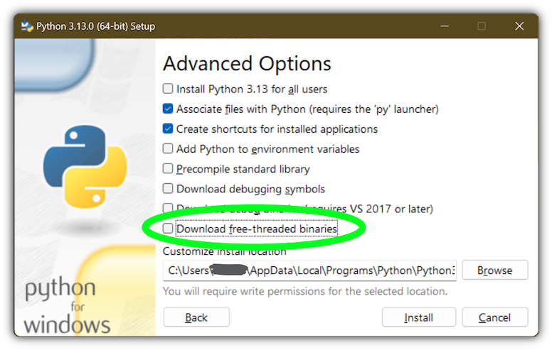

36. Using Python on Windows#
This document aims to give an overview of Windows-specific behaviour you should know about when using Python on Microsoft Windows.
Unlike most Unix systems and services, Windows does not include a system supported installation of Python. To make Python available, the CPython team has compiled Windows installers with every release for many years. These installers are primarily intended to add a per-user installation of Python, with the core interpreter and library being used by a single user. The installer is also able to install for all users of a single machine, and a separate ZIP file is available for application-local distributions.
As specified in PEP 11, a Python release only supports a Windows platform while Microsoft considers the platform under extended support. This means that Python supports Windows 8.1 and newer. If you require Windows 7 support, please install Python 3.8.
There are a number of different installers available for Windows, each with certain benefits and downsides.
The full installer contains all components and is the best option for developers using Python for any kind of project.
The Microsoft Store package is a simple installation of Python that is suitable for running scripts and packages, and using IDLE or other development environments. It requires Windows 10 and above, but can be safely installed without corrupting other programs. It also provides many convenient commands for launching Python and its tools.
The nuget.org packages are lightweight installations intended for continuous integration systems. It can be used to build Python packages or run scripts, but is not updateable and has no user interface tools.
The embeddable package is a minimal package of Python suitable for embedding into a larger application.
36.1. The full installer#
36.1.1. Installation steps#
Four Python installers are available for download - two each for the 32-bit and 64-bit versions of the interpreter. The web installer is a small initial download, and it will automatically download the required components as necessary. The offline installer includes the components necessary for a default installation and only requires an internet connection for optional features. See Installing Without Downloading for other ways to avoid downloading during installation.
After starting the installer, one of two options may be selected:

If you select “Install Now”:
You will not need to be an administrator (unless a system update for the C Runtime Library is required or you install the Python Launcher for Windows for all users)
Python will be installed into your user directory
The Python Launcher for Windows will be installed according to the option at the bottom of the first page
The standard library, test suite, launcher and pip will be installed
If selected, the install directory will be added to your
PATHShortcuts will only be visible for the current user
Selecting “Customize installation” will allow you to select the features to install, the installation location and other options or post-install actions. To install debugging symbols or binaries, you will need to use this option.
To perform an all-users installation, you should select “Customize installation”. In this case:
You may be required to provide administrative credentials or approval
Python will be installed into the Program Files directory
The Python Launcher for Windows will be installed into the Windows directory
Optional features may be selected during installation
The standard library can be pre-compiled to bytecode
If selected, the install directory will be added to the system
PATHShortcuts are available for all users
36.1.2. Removing the MAX_PATH Limitation#
Windows historically has limited path lengths to 260 characters. This meant that paths longer than this would not resolve and errors would result.
In the latest versions of Windows, this limitation can be expanded to
approximately 32,000 characters. Your administrator will need to activate the
“Enable Win32 long paths” group policy, or set LongPathsEnabled to 1
in the registry key
HKEY_LOCAL_MACHINE\SYSTEM\CurrentControlSet\Control\FileSystem.
This allows the open() function, the os module and most other
path functionality to accept and return paths longer than 260 characters.
After changing the above option, no further configuration is required.
Changed in version 3.6: Support for long paths was enabled in Python.
36.1.3. Installing Without UI#
All of the options available in the installer UI can also be specified from the command line, allowing scripted installers to replicate an installation on many machines without user interaction. These options may also be set without suppressing the UI in order to change some of the defaults.
The following options (found by executing the installer with /?) can be
passed into the installer:
Name |
Description |
|---|---|
/passive |
to display progress without requiring user interaction |
/quiet |
to install/uninstall without displaying any UI |
/simple |
to prevent user customization |
/uninstall |
to remove Python (without confirmation) |
/layout [directory] |
to pre-download all components |
/log [filename] |
to specify log files location |
All other options are passed as name=value, where the value is usually
0 to disable a feature, 1 to enable a feature, or a path. The full list
of available options is shown below.
Name |
Description |
Default |
|---|---|---|
InstallAllUsers |
Perform a system-wide installation. |
0 |
TargetDir |
The installation directory |
Selected based on InstallAllUsers |
DefaultAllUsersTargetDir |
The default installation directory for all-user installs |
|
DefaultJustForMeTargetDir |
The default install directory for just-for-me installs |
|
DefaultCustomTargetDir |
The default custom install directory displayed in the UI |
(empty) |
AssociateFiles |
Create file associations if the launcher is also installed. |
1 |
CompileAll |
Compile all |
0 |
PrependPath |
Prepend install and Scripts
directories to |
0 |
AppendPath |
Append install and Scripts
directories to |
0 |
Shortcuts |
Create shortcuts for the interpreter, documentation and IDLE if installed. |
1 |
Include_doc |
Install Python manual |
1 |
Include_debug |
Install debug binaries |
0 |
Include_dev |
Install developer headers and libraries. Omitting this may lead to an unusable installation. |
1 |
Include_exe |
Install |
1 |
Include_launcher |
Install Python Launcher for Windows. |
1 |
InstallLauncherAllUsers |
Installs the launcher for all
users. Also requires
|
1 |
Include_lib |
Install standard library and extension modules. Omitting this may lead to an unusable installation. |
1 |
Include_pip |
Install bundled pip and setuptools |
1 |
Include_symbols |
Install debugging symbols ( |
0 |
Include_tcltk |
Install Tcl/Tk support and IDLE |
1 |
Include_test |
Install standard library test suite |
1 |
Include_tools |
Install utility scripts |
1 |
LauncherOnly |
Only installs the launcher. This will override most other options. |
0 |
SimpleInstall |
Disable most install UI |
0 |
SimpleInstallDescription |
A custom message to display when the simplified install UI is used. |
(empty) |
For example, to silently install a default, system-wide Python installation, you could use the following command (from an elevated command prompt):
python-3.9.0.exe /quiet InstallAllUsers=1 PrependPath=1 Include_test=0
To allow users to easily install a personal copy of Python without the test suite, you could provide a shortcut with the following command. This will display a simplified initial page and disallow customization:
python-3.9.0.exe InstallAllUsers=0 Include_launcher=0 Include_test=0
SimpleInstall=1 SimpleInstallDescription="Just for me, no test suite."
(Note that omitting the launcher also omits file associations, and is only recommended for per-user installs when there is also a system-wide installation that included the launcher.)
The options listed above can also be provided in a file named unattend.xml
alongside the executable. This file specifies a list of options and values.
When a value is provided as an attribute, it will be converted to a number if
possible. Values provided as element text are always left as strings. This
example file sets the same options as the previous example:
<Options>
<Option Name="InstallAllUsers" Value="no" />
<Option Name="Include_launcher" Value="0" />
<Option Name="Include_test" Value="no" />
<Option Name="SimpleInstall" Value="yes" />
<Option Name="SimpleInstallDescription">Just for me, no test suite</Option>
</Options>
36.1.4. Installing Without Downloading#
As some features of Python are not included in the initial installer download, selecting those features may require an internet connection. To avoid this need, all possible components may be downloaded on-demand to create a complete layout that will no longer require an internet connection regardless of the selected features. Note that this download may be bigger than required, but where a large number of installations are going to be performed it is very useful to have a locally cached copy.
Execute the following command from Command Prompt to download all possible
required files. Remember to substitute python-3.9.0.exe for the actual
name of your installer, and to create layouts in their own directories to
avoid collisions between files with the same name.
python-3.9.0.exe /layout [optional target directory]
You may also specify the /quiet option to hide the progress display.
36.1.5. Modifying an install#
Once Python has been installed, you can add or remove features through the Programs and Features tool that is part of Windows. Select the Python entry and choose “Uninstall/Change” to open the installer in maintenance mode.
“Modify” allows you to add or remove features by modifying the checkboxes - unchanged checkboxes will not install or remove anything. Some options cannot be changed in this mode, such as the install directory; to modify these, you will need to remove and then reinstall Python completely.
“Repair” will verify all the files that should be installed using the current settings and replace any that have been removed or modified.
“Uninstall” will remove Python entirely, with the exception of the Python Launcher for Windows, which has its own entry in Programs and Features.
36.1.6. Installing Free-threaded Binaries#
Added in version 3.13: (Experimental)
Note
Everything described in this section is considered experimental, and should be expected to change in future releases.
To install pre-built binaries with free-threading enabled (see PEP 703), you should select “Customize installation”. The second page of options includes the “Download free-threaded binaries” checkbox.
Selecting this option will download and install additional binaries to the same
location as the main Python install. The main executable is called
python3.13t.exe, and other binaries either receive a t suffix or a full
ABI suffix. Python source files and bundled third-party dependencies are shared
with the main install.
The free-threaded version is registered as a regular Python install with the
tag 3.13t (with a -32 or -arm64 suffix as normal for those
platforms). This allows tools to discover it, and for the Python Launcher for Windows to
support py.exe -3.13t. Note that the launcher will interpret py.exe -3
(or a python3 shebang) as “the latest 3.x install”, which will prefer the
free-threaded binaries over the regular ones, while py.exe -3.13 will not.
If you use the short style of option, you may prefer to not install the
free-threaded binaries at this time.
To specify the install option at the command line, use
Include_freethreaded=1. See Installing Without Downloading for instructions on
pre-emptively downloading the additional binaries for offline install. The
options to include debug symbols and binaries also apply to the free-threaded
builds.
Free-threaded binaries are also available on nuget.org.
36.2. The Microsoft Store package#
Added in version 3.7.2.
The Microsoft Store package is an easily installable Python interpreter that is intended mainly for interactive use, for example, by students.
To install the package, ensure you have the latest Windows 10 updates and search the Microsoft Store app for “Python “. Ensure that the app you select is published by the Python Software Foundation, and install it.
Warning
Python will always be available for free on the Microsoft Store. If you are asked to pay for it, you have not selected the correct package.
After installation, Python may be launched by finding it in Start.
Alternatively, it will be available from any Command Prompt or PowerShell
session by typing python. Further, pip and IDLE may be used by typing
pip or idle. IDLE can also be found in Start.
All three commands are also available with version number suffixes, for
example, as python3.exe and python3.x.exe as well as
python.exe (where 3.x is the specific version you want to launch,
such as ). Open “Manage App Execution Aliases” through Start to
select which version of Python is associated with each command. It is
recommended to make sure that pip and idle are consistent with
whichever version of python is selected.
Virtual environments can be created with python -m venv and activated
and used as normal.
If you have installed another version of Python and added it to your
PATH variable, it will be available as python.exe rather than the
one from the Microsoft Store. To access the new installation, use
python3.exe or python3.x.exe.
The py.exe launcher will detect this Python installation, but will prefer
installations from the traditional installer.
To remove Python, open Settings and use Apps and Features, or else find Python in Start and right-click to select Uninstall. Uninstalling will remove all packages you installed directly into this Python installation, but will not remove any virtual environments
36.2.1. Known issues#
36.2.1.1. Redirection of local data, registry, and temporary paths#
Because of restrictions on Microsoft Store apps, Python scripts may not have
full write access to shared locations such as TEMP and the registry.
Instead, it will write to a private copy. If your scripts must modify the
shared locations, you will need to install the full installer.
At runtime, Python will use a private copy of well-known Windows folders and the registry.
For example, if the environment variable %APPDATA% is c:\Users\<user>\AppData\,
then when writing to C:\Users\<user>\AppData\Local will write to
C:\Users\<user>\AppData\Local\Packages\PythonSoftwareFoundation.Python.3.8_qbz5n2kfra8p0\LocalCache\Local\.
When reading files, Windows will return the file from the private folder, or if that does not exist, the
real Windows directory. For example reading C:\Windows\System32 returns the contents of C:\Windows\System32
plus the contents of C:\Program Files\WindowsApps\package_name\VFS\SystemX86.
You can find the real path of any existing file using os.path.realpath():
>>> import os
>>> test_file = 'C:\\Users\\example\\AppData\\Local\\test.txt'
>>> os.path.realpath(test_file)
'C:\\Users\\example\\AppData\\Local\\Packages\\PythonSoftwareFoundation.Python.3.8_qbz5n2kfra8p0\\LocalCache\\Local\\test.txt'
When writing to the Windows Registry, the following behaviors exist:
Reading from
HKLM\\Softwareis allowed and results are merged with theregistry.datfile in the package.Writing to
HKLM\\Softwareis not allowed if the corresponding key/value exists, i.e. modifying existing keys.Writing to
HKLM\\Softwareis allowed as long as a corresponding key/value does not exist in the package and the user has the correct access permissions.
For more detail on the technical basis for these limitations, please consult Microsoft’s documentation on packaged full-trust apps, currently available at docs.microsoft.com/en-us/windows/msix/desktop/desktop-to-uwp-behind-the-scenes
36.3. The nuget.org packages#
Added in version 3.5.2.
The nuget.org package is a reduced size Python environment intended for use on continuous integration and build systems that do not have a system-wide install of Python. While nuget is “the package manager for .NET”, it also works perfectly fine for packages containing build-time tools.
Visit nuget.org for the most up-to-date information on using nuget. What follows is a summary that is sufficient for Python developers.
The nuget.exe command line tool may be downloaded directly from
https://aka.ms/nugetclidl, for example, using curl or PowerShell. With the
tool, the latest version of Python for 64-bit or 32-bit machines is installed
using:
nuget.exe install python -ExcludeVersion -OutputDirectory .
nuget.exe install pythonx86 -ExcludeVersion -OutputDirectory .
To select a particular version, add a -Version 3.x.y. The output directory
may be changed from ., and the package will be installed into a
subdirectory. By default, the subdirectory is named the same as the package,
and without the -ExcludeVersion option this name will include the specific
version installed. Inside the subdirectory is a tools directory that
contains the Python installation:
# Without -ExcludeVersion
> .\python.3.5.2\tools\python.exe -V
Python 3.5.2
# With -ExcludeVersion
> .\python\tools\python.exe -V
Python 3.5.2
In general, nuget packages are not upgradeable, and newer versions should be installed side-by-side and referenced using the full path. Alternatively, delete the package directory manually and install it again. Many CI systems will do this automatically if they do not preserve files between builds.
Alongside the tools directory is a build\native directory. This
contains a MSBuild properties file python.props that can be used in a
C++ project to reference the Python install. Including the settings will
automatically use the headers and import libraries in your build.
The package information pages on nuget.org are www.nuget.org/packages/python for the 64-bit version, www.nuget.org/packages/pythonx86 for the 32-bit version, and www.nuget.org/packages/pythonarm64 for the ARM64 version
36.3.1. Free-threaded packages#
Added in version 3.13: (Experimental)
Note
Everything described in this section is considered experimental, and should be expected to change in future releases.
Packages containing free-threaded binaries are named
python-freethreaded
for the 64-bit version, pythonx86-freethreaded for the 32-bit
version, and pythonarm64-freethreaded for the ARM64
version. These packages contain both the python3.13t.exe and
python.exe entry points, both of which run free threaded.
36.4. The embeddable package#
Added in version 3.5.
The embedded distribution is a ZIP file containing a minimal Python environment. It is intended for acting as part of another application, rather than being directly accessed by end-users.
When extracted, the embedded distribution is (almost) fully isolated from the
user’s system, including environment variables, system registry settings, and
installed packages. The standard library is included as pre-compiled and
optimized .pyc files in a ZIP, and python3.dll, python37.dll,
python.exe and pythonw.exe are all provided. Tcl/tk (including all
dependents, such as Idle), pip and the Python documentation are not included.
Note
The embedded distribution does not include the Microsoft C Runtime and it is
the responsibility of the application installer to provide this. The
runtime may have already been installed on a user’s system previously or
automatically via Windows Update, and can be detected by finding
ucrtbase.dll in the system directory.
Third-party packages should be installed by the application installer alongside the embedded distribution. Using pip to manage dependencies as for a regular Python installation is not supported with this distribution, though with some care it may be possible to include and use pip for automatic updates. In general, third-party packages should be treated as part of the application (“vendoring”) so that the developer can ensure compatibility with newer versions before providing updates to users.
The two recommended use cases for this distribution are described below.
36.4.1. Python Application#
An application written in Python does not necessarily require users to be aware of that fact. The embedded distribution may be used in this case to include a private version of Python in an install package. Depending on how transparent it should be (or conversely, how professional it should appear), there are two options.
Using a specialized executable as a launcher requires some coding, but provides
the most transparent experience for users. With a customized launcher, there are
no obvious indications that the program is running on Python: icons can be
customized, company and version information can be specified, and file
associations behave properly. In most cases, a custom launcher should simply be
able to call Py_Main with a hard-coded command line.
The simpler approach is to provide a batch file or generated shortcut that
directly calls the python.exe or pythonw.exe with the required
command-line arguments. In this case, the application will appear to be Python
and not its actual name, and users may have trouble distinguishing it from other
running Python processes or file associations.
With the latter approach, packages should be installed as directories alongside the Python executable to ensure they are available on the path. With the specialized launcher, packages can be located in other locations as there is an opportunity to specify the search path before launching the application.
36.4.2. Embedding Python#
Applications written in native code often require some form of scripting
language, and the embedded Python distribution can be used for this purpose. In
general, the majority of the application is in native code, and some part will
either invoke python.exe or directly use python3.dll. For either case,
extracting the embedded distribution to a subdirectory of the application
installation is sufficient to provide a loadable Python interpreter.
As with the application use, packages can be installed to any location as there is an opportunity to specify search paths before initializing the interpreter. Otherwise, there is no fundamental differences between using the embedded distribution and a regular installation.
36.5. Alternative bundles#
Besides the standard CPython distribution, there are modified packages including additional functionality. The following is a list of popular versions and their key features:
- ActivePython
Installer with multi-platform compatibility, documentation, PyWin32
- Anaconda
Popular scientific modules (such as numpy, scipy and pandas) and the
condapackage manager.- Enthought Deployment Manager
“The Next Generation Python Environment and Package Manager”.
Previously Enthought provided Canopy, but it reached end of life in 2016.
- WinPython
Windows-specific distribution with prebuilt scientific packages and tools for building packages.
Note that these packages may not include the latest versions of Python or other libraries, and are not maintained or supported by the core Python team.
36.6. Configuring Python#
To run Python conveniently from a command prompt, you might consider changing some default environment variables in Windows. While the installer provides an option to configure the PATH and PATHEXT variables for you, this is only reliable for a single, system-wide installation. If you regularly use multiple versions of Python, consider using the Python Launcher for Windows.
36.6.1. Excursus: Setting environment variables#
Windows allows environment variables to be configured permanently at both the User level and the System level, or temporarily in a command prompt.
To temporarily set environment variables, open Command Prompt and use the set command:
C:\>set PATH=C:\Program Files\Python 3.9;%PATH%
C:\>set PYTHONPATH=%PYTHONPATH%;C:\My_python_lib
C:\>python
These changes will apply to any further commands executed in that console, and will be inherited by any applications started from the console.
Including the variable name within percent signs will expand to the existing
value, allowing you to add your new value at either the start or the end.
Modifying PATH by adding the directory containing
python.exe to the start is a common way to ensure the correct version
of Python is launched.
To permanently modify the default environment variables, click Start and search for ‘edit environment variables’, or open System properties, Advanced system settings and click the Environment Variables button. In this dialog, you can add or modify User and System variables. To change System variables, you need non-restricted access to your machine (i.e. Administrator rights).
Note
Windows will concatenate User variables after System variables, which may
cause unexpected results when modifying PATH.
The PYTHONPATH variable is used by all versions of Python,
so you should not permanently configure it unless the listed paths
only include code that is compatible with all of your installed Python
versions.
See also
- https://docs.microsoft.com/en-us/windows/win32/procthread/environment-variables
Overview of environment variables on Windows
- https://docs.microsoft.com/en-us/windows-server/administration/windows-commands/set_1
The
setcommand, for temporarily modifying environment variables- https://docs.microsoft.com/en-us/windows-server/administration/windows-commands/setx
The
setxcommand, for permanently modifying environment variables
36.6.2. Finding the Python executable#
Changed in version 3.5.
Besides using the automatically created start menu entry for the Python interpreter, you might want to start Python in the command prompt. The installer has an option to set that up for you.
On the first page of the installer, an option labelled “Add Python to PATH”
may be selected to have the installer add the install location into the
PATH. The location of the Scripts\ folder is also added.
This allows you to type python to run the interpreter, and
pip for the package installer. Thus, you can also execute your
scripts with command line options, see Command line documentation.
If you don’t enable this option at install time, you can always re-run the
installer, select Modify, and enable it. Alternatively, you can manually
modify the PATH using the directions in Excursus: Setting environment variables. You
need to set your PATH environment variable to include the directory
of your Python installation, delimited by a semicolon from other entries. An
example variable could look like this (assuming the first two entries already
existed):
C:\WINDOWS\system32;C:\WINDOWS;C:\Program Files\Python 3.9
36.7. UTF-8 mode#
Added in version 3.7.
Windows still uses legacy encodings for the system encoding (the ANSI Code
Page). Python uses it for the default encoding of text files (e.g.
locale.getencoding()).
This may cause issues because UTF-8 is widely used on the internet and most Unix systems, including WSL (Windows Subsystem for Linux).
You can use the Python UTF-8 Mode to change the default text
encoding to UTF-8. You can enable the Python UTF-8 Mode via
the -X utf8 command line option, or the PYTHONUTF8=1 environment
variable. See PYTHONUTF8 for enabling UTF-8 mode, and
Excursus: Setting environment variables for how to modify environment variables.
When the Python UTF-8 Mode is enabled, you can still use the system encoding (the ANSI Code Page) via the “mbcs” codec.
Note that adding PYTHONUTF8=1 to the default environment variables
will affect all Python 3.7+ applications on your system.
If you have any Python 3.7+ applications which rely on the legacy
system encoding, it is recommended to set the environment variable
temporarily or use the -X utf8 command line option.
Note
Even when UTF-8 mode is disabled, Python uses UTF-8 by default on Windows for:
Console I/O including standard I/O (see PEP 528 for details).
The filesystem encoding (see PEP 529 for details).
36.8. Python Launcher for Windows#
Added in version 3.3.
The Python launcher for Windows is a utility which aids in locating and executing of different Python versions. It allows scripts (or the command-line) to indicate a preference for a specific Python version, and will locate and execute that version.
Unlike the PATH variable, the launcher will correctly select the most
appropriate version of Python. It will prefer per-user installations over
system-wide ones, and orders by language version rather than using the most
recently installed version.
The launcher was originally specified in PEP 397.
36.8.1. Getting started#
36.8.1.1. From the command-line#
Changed in version 3.6.
System-wide installations of Python 3.3 and later will put the launcher on your
PATH. The launcher is compatible with all available versions of
Python, so it does not matter which version is installed. To check that the
launcher is available, execute the following command in Command Prompt:
py
You should find that the latest version of Python you have installed is started - it can be exited as normal, and any additional command-line arguments specified will be sent directly to Python.
If you have multiple versions of Python installed (e.g., 3.7 and ) you will have noticed that Python was started - to launch Python 3.7, try the command:
py -3.7
If you want the latest version of Python 2 you have installed, try the command:
py -2
If you see the following error, you do not have the launcher installed:
'py' is not recognized as an internal or external command,
operable program or batch file.
The command:
py --list
displays the currently installed version(s) of Python.
The -x.y argument is the short form of the -V:Company/Tag argument,
which allows selecting a specific Python runtime, including those that may have
come from somewhere other than python.org. Any runtime registered by following
PEP 514 will be discoverable. The --list command lists all available
runtimes using the -V: format.
When using the -V: argument, specifying the Company will limit selection to
runtimes from that provider, while specifying only the Tag will select from all
providers. Note that omitting the slash implies a tag:
# Select any '3.*' tagged runtime
py -V:3
# Select any 'PythonCore' released runtime
py -V:PythonCore/
# Select PythonCore's latest Python 3 runtime
py -V:PythonCore/3
The short form of the argument (-3) only ever selects from core Python
releases, and not other distributions. However, the longer form (-V:3) will
select from any.
The Company is matched on the full string, case-insenitive. The Tag is matched
oneither the full string, or a prefix, provided the next character is a dot or a
hyphen. This allows -V:3.1 to match 3.1-32, but not 3.10. Tags are
sorted using numerical ordering (3.10 is newer than 3.1), but are
compared using text (-V:3.01 does not match 3.1).
36.8.1.2. Virtual environments#
Added in version 3.5.
If the launcher is run with no explicit Python version specification, and a
virtual environment (created with the standard library venv module or
the external virtualenv tool) active, the launcher will run the virtual
environment’s interpreter rather than the global one. To run the global
interpreter, either deactivate the virtual environment, or explicitly specify
the global Python version.
36.8.1.3. From a script#
Let’s create a test Python script - create a file called hello.py with the
following contents
#! python
import sys
sys.stdout.write("hello from Python %s\n" % (sys.version,))
From the directory in which hello.py lives, execute the command:
py hello.py
You should notice the version number of your latest Python 2.x installation is printed. Now try changing the first line to be:
#! python3
Re-executing the command should now print the latest Python 3.x information.
As with the above command-line examples, you can specify a more explicit
version qualifier. Assuming you have Python 3.7 installed, try changing
the first line to #! python3.7 and you should find the 3.7
version information printed.
Note that unlike interactive use, a bare “python” will use the latest
version of Python 2.x that you have installed. This is for backward
compatibility and for compatibility with Unix, where the command python
typically refers to Python 2.
36.8.1.4. From file associations#
The launcher should have been associated with Python files (i.e. .py,
.pyw, .pyc files) when it was installed. This means that
when you double-click on one of these files from Windows explorer the launcher
will be used, and therefore you can use the same facilities described above to
have the script specify the version which should be used.
The key benefit of this is that a single launcher can support multiple Python versions at the same time depending on the contents of the first line.
36.8.2. Shebang Lines#
If the first line of a script file starts with #!, it is known as a
“shebang” line. Linux and other Unix like operating systems have native
support for such lines and they are commonly used on such systems to indicate
how a script should be executed. This launcher allows the same facilities to
be used with Python scripts on Windows and the examples above demonstrate their
use.
To allow shebang lines in Python scripts to be portable between Unix and Windows, this launcher supports a number of ‘virtual’ commands to specify which interpreter to use. The supported virtual commands are:
/usr/bin/env/usr/bin/python/usr/local/bin/pythonpython
For example, if the first line of your script starts with
#! /usr/bin/python
The default Python or an active virtual environment will be located and used.
As many Python scripts written to work on Unix will already have this line,
you should find these scripts can be used by the launcher without modification.
If you are writing a new script on Windows which you hope will be useful on
Unix, you should use one of the shebang lines starting with /usr.
Any of the above virtual commands can be suffixed with an explicit version
(either just the major version, or the major and minor version).
Furthermore the 32-bit version can be requested by adding “-32” after the
minor version. I.e. /usr/bin/python3.7-32 will request usage of the
32-bit Python 3.7. If a virtual environment is active, the version will be
ignored and the environment will be used.
Added in version 3.7: Beginning with python launcher 3.7 it is possible to request 64-bit version
by the “-64” suffix. Furthermore it is possible to specify a major and
architecture without minor (i.e. /usr/bin/python3-64).
Changed in version 3.11: The “-64” suffix is deprecated, and now implies “any architecture that is
not provably i386/32-bit”. To request a specific environment, use the new
-V:TAG argument with the complete tag.
Changed in version 3.13: Virtual commands referencing python now prefer an active virtual
environment rather than searching PATH. This handles cases where
the shebang specifies /usr/bin/env python3 but python3.exe is
not present in the active environment.
The /usr/bin/env form of shebang line has one further special property.
Before looking for installed Python interpreters, this form will search the
executable PATH for a Python executable matching the name provided
as the first argument. This corresponds to the behaviour of the Unix env
program, which performs a PATH search.
If an executable matching the first argument after the env command cannot
be found, but the argument starts with python, it will be handled as
described for the other virtual commands.
The environment variable PYLAUNCHER_NO_SEARCH_PATH may be set
(to any value) to skip this search of PATH.
Shebang lines that do not match any of these patterns are looked up in the
[commands] section of the launcher’s .INI file.
This may be used to handle certain commands in a way that makes sense for your
system. The name of the command must be a single argument (no spaces in the
shebang executable), and the value substituted is the full path to the
executable (additional arguments specified in the .INI will be quoted as part
of the filename).
[commands]
/bin/xpython=C:\Program Files\XPython\python.exe
Any commands not found in the .INI file are treated as Windows executable paths that are absolute or relative to the directory containing the script file. This is a convenience for Windows-only scripts, such as those generated by an installer, since the behavior is not compatible with Unix-style shells. These paths may be quoted, and may include multiple arguments, after which the path to the script and any additional arguments will be appended.
36.8.3. Arguments in shebang lines#
The shebang lines can also specify additional options to be passed to the Python interpreter. For example, if you have a shebang line:
#! /usr/bin/python -v
Then Python will be started with the -v option
36.8.4. Customization#
36.8.4.1. Customization via INI files#
Two .ini files will be searched by the launcher - py.ini in the current
user’s application data directory (%LOCALAPPDATA% or $env:LocalAppData)
and py.ini in the same directory as the launcher. The same .ini files are
used for both the ‘console’ version of the launcher (i.e. py.exe) and for the
‘windows’ version (i.e. pyw.exe).
Customization specified in the “application directory” will have precedence over the one next to the executable, so a user, who may not have write access to the .ini file next to the launcher, can override commands in that global .ini file.
36.8.4.2. Customizing default Python versions#
In some cases, a version qualifier can be included in a command to dictate which version of Python will be used by the command. A version qualifier starts with a major version number and can optionally be followed by a period (‘.’) and a minor version specifier. Furthermore it is possible to specify if a 32 or 64 bit implementation shall be requested by adding “-32” or “-64”.
For example, a shebang line of #!python has no version qualifier, while
#!python3 has a version qualifier which specifies only a major version.
If no version qualifiers are found in a command, the environment
variable PY_PYTHON can be set to specify the default version
qualifier. If it is not set, the default is “3”. The variable can
specify any value that may be passed on the command line, such as “3”,
“3.7”, “3.7-32” or “3.7-64”. (Note that the “-64” option is only
available with the launcher included with Python 3.7 or newer.)
If no minor version qualifiers are found, the environment variable
PY_PYTHON{major} (where {major} is the current major version qualifier
as determined above) can be set to specify the full version. If no such option
is found, the launcher will enumerate the installed Python versions and use
the latest minor release found for the major version, which is likely,
although not guaranteed, to be the most recently installed version in that
family.
On 64-bit Windows with both 32-bit and 64-bit implementations of the same (major.minor) Python version installed, the 64-bit version will always be preferred. This will be true for both 32-bit and 64-bit implementations of the launcher - a 32-bit launcher will prefer to execute a 64-bit Python installation of the specified version if available. This is so the behavior of the launcher can be predicted knowing only what versions are installed on the PC and without regard to the order in which they were installed (i.e., without knowing whether a 32 or 64-bit version of Python and corresponding launcher was installed last). As noted above, an optional “-32” or “-64” suffix can be used on a version specifier to change this behaviour.
Examples:
If no relevant options are set, the commands
pythonandpython2will use the latest Python 2.x version installed and the commandpython3will use the latest Python 3.x installed.The command
python3.7will not consult any options at all as the versions are fully specified.If
PY_PYTHON=3, the commandspythonandpython3will both use the latest installed Python 3 version.If
PY_PYTHON=3.7-32, the commandpythonwill use the 32-bit implementation of 3.7 whereas the commandpython3will use the latest installed Python (PY_PYTHON was not considered at all as a major version was specified.)If
PY_PYTHON=3andPY_PYTHON3=3.7, the commandspythonandpython3will both use specifically 3.7
In addition to environment variables, the same settings can be configured
in the .INI file used by the launcher. The section in the INI file is
called [defaults] and the key name will be the same as the
environment variables without the leading PY_ prefix (and note that
the key names in the INI file are case insensitive.) The contents of
an environment variable will override things specified in the INI file.
For example:
Setting
PY_PYTHON=3.7is equivalent to the INI file containing:
[defaults]
python=3.7
Setting
PY_PYTHON=3andPY_PYTHON3=3.7is equivalent to the INI file containing:
[defaults]
python=3
python3=3.7
36.8.5. Diagnostics#
If an environment variable PYLAUNCHER_DEBUG is set (to any value), the
launcher will print diagnostic information to stderr (i.e. to the console).
While this information manages to be simultaneously verbose and terse, it
should allow you to see what versions of Python were located, why a
particular version was chosen and the exact command-line used to execute the
target Python. It is primarily intended for testing and debugging.
36.8.6. Dry Run#
If an environment variable PYLAUNCHER_DRYRUN is set (to any value),
the launcher will output the command it would have run, but will not actually
launch Python. This may be useful for tools that want to use the launcher to
detect and then launch Python directly. Note that the command written to
standard output is always encoded using UTF-8, and may not render correctly in
the console.
36.8.7. Install on demand#
If an environment variable PYLAUNCHER_ALLOW_INSTALL is set (to any
value), and the requested Python version is not installed but is available on
the Microsoft Store, the launcher will attempt to install it. This may require
user interaction to complete, and you may need to run the command again.
An additional PYLAUNCHER_ALWAYS_INSTALL variable causes the launcher
to always try to install Python, even if it is detected. This is mainly intended
for testing (and should be used with PYLAUNCHER_DRYRUN).
36.8.8. Return codes#
The following exit codes may be returned by the Python launcher. Unfortunately, there is no way to distinguish these from the exit code of Python itself.
The names of codes are as used in the sources, and are only for reference. There is no way to access or resolve them apart from reading this page. Entries are listed in alphabetical order of names.
Name |
Value |
Description |
|---|---|---|
RC_BAD_VENV_CFG |
107 |
A |
RC_CREATE_PROCESS |
101 |
Failed to launch Python. |
RC_INSTALLING |
111 |
An install was started, but the command will need to be re-run after it completes. |
RC_INTERNAL_ERROR |
109 |
Unexpected error. Please report a bug. |
RC_NO_COMMANDLINE |
108 |
Unable to obtain command line from the operating system. |
RC_NO_PYTHON |
103 |
Unable to locate the requested version. |
RC_NO_VENV_CFG |
106 |
A |
36.9. Finding modules#
These notes supplement the description at The initialization of the sys.path module search path with detailed Windows notes.
When no ._pth file is found, this is how sys.path is populated on
Windows:
An empty entry is added at the start, which corresponds to the current directory.
If the environment variable
PYTHONPATHexists, as described in Environment variables, its entries are added next. Note that on Windows, paths in this variable must be separated by semicolons, to distinguish them from the colon used in drive identifiers (C:\etc.).Additional “application paths” can be added in the registry as subkeys of
\SOFTWARE\Python\PythonCore{version}\PythonPathunder both theHKEY_CURRENT_USERandHKEY_LOCAL_MACHINEhives. Subkeys which have semicolon-delimited path strings as their default value will cause each path to be added tosys.path. (Note that all known installers only use HKLM, so HKCU is typically empty.)If the environment variable
PYTHONHOMEis set, it is assumed as “Python Home”. Otherwise, the path of the main Python executable is used to locate a “landmark file” (eitherLib\os.pyorpythonXY.zip) to deduce the “Python Home”. If a Python home is found, the relevant sub-directories added tosys.path(Lib,plat-win, etc) are based on that folder. Otherwise, the core Python path is constructed from the PythonPath stored in the registry.If the Python Home cannot be located, no
PYTHONPATHis specified in the environment, and no registry entries can be found, a default path with relative entries is used (e.g..\Lib;.\plat-win, etc).
If a pyvenv.cfg file is found alongside the main executable or in the
directory one level above the executable, the following variations apply:
If
homeis an absolute path andPYTHONHOMEis not set, this path is used instead of the path to the main executable when deducing the home location.
The end result of all this is:
When running
python.exe, or any other .exe in the main Python directory (either an installed version, or directly from the PCbuild directory), the core path is deduced, and the core paths in the registry are ignored. Other “application paths” in the registry are always read.When Python is hosted in another .exe (different directory, embedded via COM, etc), the “Python Home” will not be deduced, so the core path from the registry is used. Other “application paths” in the registry are always read.
If Python can’t find its home and there are no registry value (frozen .exe, some very strange installation setup) you get a path with some default, but relative, paths.
For those who want to bundle Python into their application or distribution, the following advice will prevent conflicts with other installations:
Include a
._pthfile alongside your executable containing the directories to include. This will ignore paths listed in the registry and environment variables, and also ignoresiteunlessimport siteis listed.If you are loading
python3.dllorpython37.dllin your own executable, explicitly setPyConfig.module_search_pathsbeforePy_InitializeFromConfig().Clear and/or overwrite
PYTHONPATHand setPYTHONHOMEbefore launchingpython.exefrom your application.If you cannot use the previous suggestions (for example, you are a distribution that allows people to run
python.exedirectly), ensure that the landmark file (Lib\os.py) exists in your install directory. (Note that it will not be detected inside a ZIP file, but a correctly named ZIP file will be detected instead.)
These will ensure that the files in a system-wide installation will not take precedence over the copy of the standard library bundled with your application. Otherwise, your users may experience problems using your application. Note that the first suggestion is the best, as the others may still be susceptible to non-standard paths in the registry and user site-packages.
Changed in version 3.6: Add ._pth file support and removes applocal option from
pyvenv.cfg.
Changed in version 3.6: Add pythonXX.zip as a potential landmark when directly adjacent
to the executable.
Deprecated since version 3.6: Modules specified in the registry under Modules (not PythonPath)
may be imported by importlib.machinery.WindowsRegistryFinder.
This finder is enabled on Windows in 3.6.0 and earlier, but may need to
be explicitly added to sys.meta_path in the future.
36.10. Additional modules#
Even though Python aims to be portable among all platforms, there are features that are unique to Windows. A couple of modules, both in the standard library and external, and snippets exist to use these features.
The Windows-specific standard modules are documented in MS Windows Specific Services.
36.10.1. PyWin32#
The :pypi:`PyWin32` module by Mark Hammond is a collection of modules for advanced Windows-specific support. This includes utilities for:
Component Object Model (COM)
Win32 API calls
Registry
Event log
Microsoft Foundation Classes (MFC) user interfaces
PythonWin is a sample MFC application shipped with PyWin32. It is an embeddable IDE with a built-in debugger.
See also
- Win32 How Do I…?
by Tim Golden
- Python and COM
by David and Paul Boddie
36.10.2. cx_Freeze#
cx_Freeze
wraps Python scripts into executable Windows programs
(*.exe files). When you have done this, you can distribute your
application without requiring your users to install Python.
36.11. Compiling Python on Windows#
If you want to compile CPython yourself, first thing you should do is get the source. You can download either the latest release’s source or just grab a fresh checkout.
The source tree contains a build solution and project files for Microsoft
Visual Studio, which is the compiler used to build the official Python
releases. These files are in the PCbuild directory.
Check PCbuild/readme.txt for general information on the build process.
For extension modules, consult Building C and C++ Extensions on Windows.
36.12. Other Platforms#
With ongoing development of Python, some platforms that used to be supported earlier are no longer supported (due to the lack of users or developers). Check PEP 11 for details on all unsupported platforms.
Windows CE is no longer supported since Python 3 (if it ever was).
The Cygwin installer offers to install the Python interpreter as well
See Python for Windows for detailed information about platforms with pre-compiled installers.